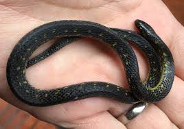
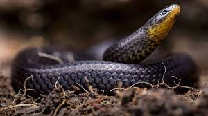
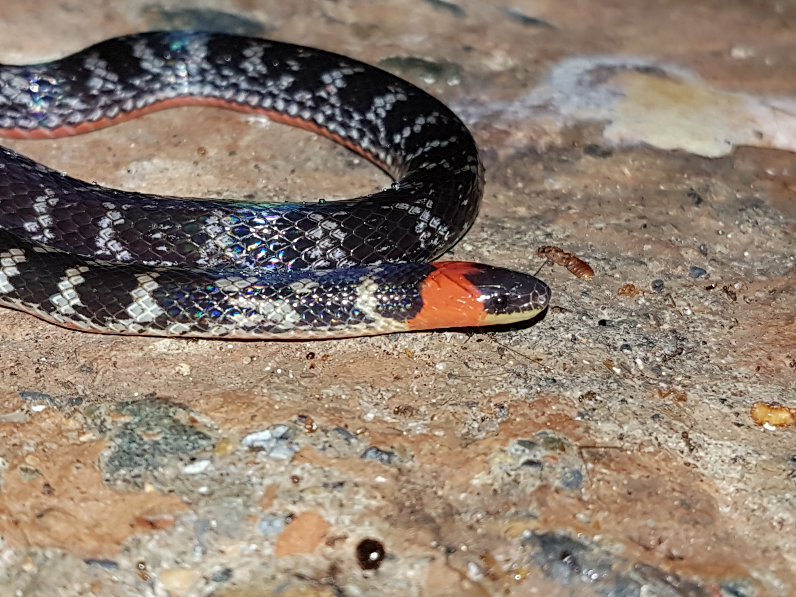

¿Por qué son importantes?
Las serpientes son esenciales para el equilibrio ecológico, controlando plagas como roedores e insectos. Además, son indicadores clave de la salud del ecosistema.
Cuidado ambiental
- No las mates; ellas mantienen el balance natural.
- Protege su hábitat natural.
- Educación: Difunde su importancia.
Curiosidades
De su veneno derivan medicamentos vitales para la humanidad. ¡Conoce más!